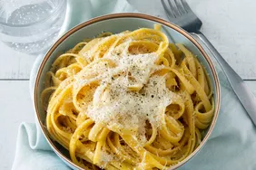

Buttered noodles are simple to make with your favorite pasta, butter, Parmesan cheese, salt, and pepper for a quick and easy, kid-friendly dish. Fresh herbs and a little lemon juice could be added to amp up the flavor. Perfect to serve either as-is or alongside steak, chicken, or meatballs. It's such a delicious recipe, yet I get many questions on how to make it.
Believe it or not, you can make this incredibly simple dish with just four ingredients:
Gather all ingredients.
Fill a large pot with lightly salted water and bring to a rolling boil.
Stir in fettuccine, bring back to a boil, and cook pasta over medium heat until tender yet firm to the bite, 8 to 10 minutes.
Drain and return pasta to pot. Mix butter, Parmesan cheese, salt, and pepper into pasta until evenly combined.
Serve hot and enojoy!